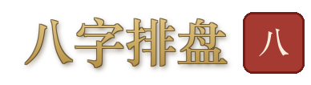

1选择模块
→2填写信息
→3排盘演算
→4查看结果
查看排盘中心 · 命理宝鉴，了解功能详情与使用方式。
排盘中心
命理宝鉴 · 七模块古制排盘 · 经典依据

四柱八字 · 神煞 · 纳音 · 十神 · 大运流年
《渊海子平》《三命通会》
119颗星曜 · 十四主星 · 六吉六煞 · 长生十二神 · 大限四化
《紫微斗数全书》
九宫飞布 · 天地人神 · 八门九星 · 格局判断 · 伏吟反吟
《奇门遁甲秘笈》
六十四卦 · 纳甲 · 六亲 · 六神 · 世应 · 变卦
《增删卜易》《卜筮正宗》
四课三传 · 十二天将 · 神煞 · 昼夜贵人 · 九宗门
《大六壬指南》《六壬大全》
本卦变卦 · 互卦 · 体用生克 · 动爻分析
《梅花易数》邵康节
玄空飞星 · 三元九运 · 24山 · 八宅法 · 太岁三煞
《沈氏玄空学》《八宅明镜》
古今同参 · 速览
紫微同局古命例 · 八字同柱名人命造 · 填一次生辰双参
《紫微斗数全书》卷四 · 《千里命稿·应运篇》
命图校勘台账
康节本卷四 14 例局不符存疑 · 原书/复盘/节气月三案对拍 · 页图定夺
生辰引擎复盘 · 校勘研究端
道藏本宫星断语
十八飞星体系 · 十二宫×151 条星断 · 独有相貌宫 · 逐星总断 17 谱
《正统道藏本紫微斗数》卷一 · 命相同参祖制孤本
命理宝鉴首页
返回主入口 · 知识库 · 智能助手
API 文档
Swagger UI · 169 routes · OpenAPI 3.0.3
📖 古今同参 · 速览
填一次生辰，同参紫微同局古命例（康节本卷四 114 盘）与八字同柱名人命造（千里命稿 46 造）